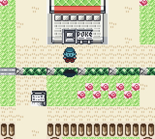
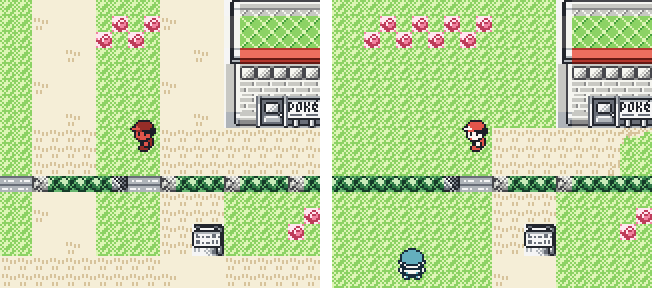

v3 is complete (2026-11-07). A diffusion world model of Pokémon Red (wm31, 16.7M parameters) and ten navigation skills trained only inside it carry an agent to the Boulder Badge in the real game in 30 of 30 runs (3 policy seeds × 10 quests); in 14 of the 30, every navigation leg was a world-model policy, with no fallback anywhere. Battles and goal sequencing are rules; local LLMs were also tested as the planner (5 of 6 reach 10/10 badges). All v3 training took 50.0 GPU-hours on one RTX 4090, ablations and failed recipes included. What is learned: how to walk between places. What is hand-written: battles and the choice of what to do next. This is not a sample-efficiency result: model-free PPO in the fast emulator reaches ≥95% on three of the navigation tasks within 10.8k-41.5k real steps (v3_agent.md); the world model's value is as a measured object and a simulator you can train in without the game.
Teaching the agent to battle inside the dream was not attempted in v3. In v3, navigation is learned in imagination while battles and goal choice are rules. We measured whether battles could be learned the same way, and for this world model the answer is no: imagined battles end early in 74.6% of 8,913 held-out battle windows (the frame probe on real frames: 1.1%), and imagined battle screens are worse than simply repeating the last frame from 2 steps on. A model that tracks battle state over many more frames (a longer context, or battle dynamics learned from RAM) could make it possible. That is future work, not part of v3. See v3_battle_fidelity.md.
v3 is the step this project has been building toward: a DIAMOND-style diffusion world model of Pokémon Red, and an agent whose navigation policies were trained entirely inside that model's imagination and then tested in the real game. It also introduces a measurement method: Pokémon Red's RAM gives exact ground truth (map, tile position, battle state), so imagination can be scored in game units (tiles, maps), not just pixels.
Units: a step is one button press followed by 24 Game Boy frames (≈0.4 s, the time to walk one tile). 32 steps ≈ 13 s of gameplay. These are not video frames.
Final results (measured)
The headline numbers for v3: how reliably the dream-trained walking works in the real game, how robust it is to where it starts, whether battles could be learned the same way (no), and whether a local LLM can replace the rule-based planner. All results are measured against the emulator's RAM as ground truth.
| Scope / Task | Result | Page |
|---|---|---|
| Boulder Badge, real game, 10-leg agent | 30/30 runs (3 seeds × 10) | v3_gym |
| Runs where every navigation leg is a world-model policy (no fallback anywhere) | 14/30 | v3_gym |
| Navigation legs at 100/100 on all 3 seeds | 7 of 10; to_pewter_pc 100/0/100, forest 100/69/97 | v3_gym |
| Start-tile robustness after fixing a reward hack (move gate) | 2,339/2,340 episodes over 26 start tiles | v3_tile_sweep |
| Can battles be trained inside this world model? | No: imagined battles end early in 74.6% of held-out windows (real-frame probe: 1.1%) | v3_battle_fidelity |
| Local LLMs as System 2 | 5 of 6 reach 10/10 badges | v3_system2 |
The badge quest
The gym quest asks whether the System 1/2 agent (learned walking, rule-based battles and goal choice) can earn the Boulder Badge (defeating Gym Leader Brock) in the real Game Boy emulator with no human input, starting from Charmander L8 in Viridian City. The agent operates under a System 1 / System 2 architecture: System 2 serves as the high-level planner over Game Boy RAM status (sequencing grinding, healing, route traversal, and gym challenges), while System 1 executes low-level navigation and battle moves. In the headline configuration with all 10 navigation legs driven by policies trained entirely inside the diffusion world model's imagination, the agent achieves 30/30 badges across three policy-training seeds (10 quests each, quest seeds 100-109), with 14 of 30 quests completing the full journey from Viridian City through Brock without triggering privileged pathfinding fallback anywhere. Seven of the ten navigation legs achieve 100/100 success across all three seeds; the only legs not reaching 100/100 on all seeds are to_pewter_pc (100 / 0 / 100, where seed 1 enters a local optimum on the Center door tile) and forest (100 / 69 / 97, where seed 1 stalls at an Antidote item ball that training data barely covers). See v3_gym.md.


Game harness: local LLMs as System 2
The game harness cleanly separates high-level planning from low-level execution: System 2 selects the current sub-goal from Game Boy RAM state (e.g., when to grind, heal, travel, or enter the gym), while System 1 executes locomotion and battles. In the bake-off below the planner is the only variable: navigation is the map-reading BFS planner and battles are rules for every row, so the badge rate measures planning on top of a fixed, non-learned System 1. Only the one-run full harness demo further down combines an LLM planner with the dream-trained legs.
| Planner | Badges | Median presses | Rejected decisions | Blackouts | s per decision | Peak GPU mem |
|---|---|---|---|---|---|---|
| rules (reference) | 10/10 | 8,508.5 | – | 1 | – | – |
| gemma4:26b (MoE) | 8/10 | 9,930.5 (8 badge runs) | 2 malformed | 8 | 8.0 | 20.9 GB |
| qwen3.6:35b-a3b (MoE) | 10/10 | 8,355 | 18 malformed | 17 | 34.6 | 22.4 GB |
| gpt-oss:20b | 10/10 | 6,233 | 8 malformed, 3 unexecutable, 1 gym outside Pewter | 14 | 15.3 | 14.4 GB |
| gemma4:31b | 10/10 | 7,239 | 0 | 3 | 13.0 | 22.4 GB |
| gemma4:12b | 10/10 | 8,145 | 7 malformed | 4 | 11.7 | 10.2 GB |
| qwen3.5:9b | 10/10 | 10,246.5 | 5 malformed | 2 | 45.4 | 7.8 GB |
Key takeaways:
gemma4:31bis the cleanest planner: Every one of its 89 decisions passed validation without a single rejection, earning 10/10 badges with only 3 blackouts and 7,239 median presses vs 8,508.5 for the rules (10 runs each, no confidence intervals).gemma4:12bis the practical candidate for planner + world model on one GPU: It achieves 10/10 badges in 8,145 presses with a 10.2 GB peak GPU memory footprint, which would leave room for the world model on a 24 GB card (not tested together).
Full harness demo (one run, not a measurement): with both halves swapped in, gemma4:31b as the planner and the ten dream-trained navigation skills, the agent won the badge in 7,045 presses (the rule planner with the same skills and seed: 8,718). All 8 decisions were the LLM's own (none rejected, 13.7 s each on average), and every navigation press came from a world-model policy. See v3_system2.md (§ Full harness demo) →
Battles: measured, and out of reach for this model
To determine whether Pokémon battle policies could also be trained purely inside the diffusion world model (Path B), wm31 was evaluated on held-out battle windows against RAM ground truth. On the full sample of 8,913 eligible held-out battle windows (29 episodes), the empirical measurements demonstrated:
- Battles end early: In 74.6% of held-out windows, the imagined battle ends more than 3 steps before the real one (compared to only 1.1% for the frame probe on real frames). A battle policy trained in this dream would learn that encounters terminate spontaneously within ~9 steps regardless of button choices.
- Battle screens degrade below copy-last from step k=2: Imagined battle frames lose to the trivial copy-last baseline for all horizons k ≥ 2 (pixel MSE 0.0629 vs 0.0556 at k=2 with non-overlapping 95% bootstrap CIs; 0.2099 vs 0.1431 at k=32), showing that a 4-frame visual context fails to preserve battle state like HP bars and menus.
- Onset is roughly right, but duration is wrong: The world model initiates battles in 53–74% of windows when real encounters occur on grass routes, but because battle frames look visually similar across turns, the 4-frame window cannot track battle progress over time.
Full analysis and architectural options are detailed in v3_battle_fidelity.md.
Seen in colour
The native-resolution upsampler (0.72M parameters) restores 72×80 greyscale frames back to native 144×160 4-shade Game Boy frames with 99.980% pixel accuracy on held-out in-distribution test episodes (test_id, with 91.4% of frames 100% exact); it functions purely as a display post-processor and is not used by any evaluation metric (upsampler.md).
The stage-2 learned colorizer (1.91M parameters) predicts per-pixel colour classes for 144×160 frames with 99.27% pixel class accuracy on held-out save states, serving strictly for visualization in figures and demo videos without any evaluation metric depending on it (colorizer.md).
Compute
All v3 training ran on a single desktop GPU (RTX 4090) and its CPU. Training time tallies every logged v3 training run, ablations and failed recipes included (76 GPU runs total, 50.0 GPU-hours); the shipped world model took 3.6 GPU-hours and each navigation skill 14.5–48.1 minutes (compute.md).
Training time (all v3 experiments, including ablations and failed recipes)
| what | device | runs | hours |
|---|---|---|---|
| diffusion world models | GPU | 6 | 8.4 |
| imagination-RL navigation policies | GPU | 66 | 40.4 |
| upsampler | GPU | 2 | 0.8 |
| colorizer (stage 2) | GPU | 2 | 0.4 |
| training total | GPU | 76 | 50.0 |
| System 2 LLM quests (bake-off, including aborted runs) | GPU (LLM) + CPU (game) | 61 | 3.9 |
| real-game PPO baseline | CPU | 29 | 3.2 |
What the shipped pipeline cost
| model | parameters | training |
|---|---|---|
world model wm31 (DIAMOND-style EDM U-Net, 72×80 greyscale) |
16.7M | 3.6 h: 63.7 min (noaug, the initialisation) + 150.1 min |
| 10 navigation legs (imagination RL, one policy per leg) | 1.58M each | 6.4 h in total, 14.5-48.1 min per leg |
| frame probe (map and position from a frame; used for rewards) | 3.1M | – |
| upsampler 72×80 → 144×160 | 0.72M | 25 min |
| colorizer stage 2 (per-pixel colour class) | 1.91M | 25 min |
Phase 1 results (2026-11-01, measured)
An agent trained only inside the world model leaves the house in the real game. Task: start in Red's bedroom and reach Pallet Town (bedroom stairs, then the 1st floor, then the front door). Real game (PyBoy), 60-press cap:
| Policy | Success | Presses (median, range) | Uses at test time |
|---|---|---|---|
| RL policy trained purely in imagination | 100 / 100 | 28 (24-32) | the last 4 screen frames only |
| Planning inside the world model (MPC) | 21 / 21 | 27 (23-49) | frames + RAM position + exit tiles |
| Greedy rule with RAM coordinates | 195 / 200 | 36 (24-59) | RAM position + exit tiles |
| Random buttons | 0 / 200 | n/a | n/a |

The shortest route is ≈22 presses. The RL policy never interacted with the emulator during training: every training step was imagined by the diffusion model. It is 8 presses faster than the greedy rule (bootstrap 95% CI [-9, -6]) and statistically tied with the planner, at a fraction of the cost.
One short task; the training reward used hand-given exit tiles (privileged at training time only); a simple heuristic with privileged coordinates nearly solves it; the recorded data that trained the world model came from a PPO agent in the same area. This is a proof of concept for "System 1 trained in a learned simulator", not general play.
1. Diffusion world model
| Model | EDM denoiser U-Net (16.7M params), DIAMOND recipe: 3-step Euler sampling, next frame conditioned on the last 4 frames + 4 button presses |
| Observation | 72×80 greyscale (exact 2× downsample of the 160×144 Game Boy screen; the original is 4-shade grey) |
| Data | the existing 200 recorded episodes × 1,000 steps (HF dataset). Episode-level splits: 139 train / 16 held-out / 45 held-out start location (Pallet Town) |
| Training | 88.6k steps, batch 64, 120 min on one RTX 4090 |
| Display | a separate 0.7M-param upsampler restores native 144×160 4-shade frames: 99.98% pixel accuracy, 91% of held-out frames pixel-perfect. Display only; every metric uses the raw 72×80 output. |

v1/v2 rollouts degraded after 2-5 steps (v2's latent collapsed). v3 frames stay sharp and coherent for 32+ steps.
2. RAM-grounded evaluation (held-out episodes)
A CNN probe reads map/tile from a frame (0.40-tile error on real held-out frames), so imagined frames can be scored against the true RAM. 512 windows, 95% CIs by episode-level bootstrap.
| k (steps) | 1 | 8 | 16 | 32 |
|---|---|---|---|---|
| Pixel MSE: imagined / copy last frame | 0.014 / 0.035 | 0.052 / 0.087 | 0.090 / 0.117 | 0.127 / 0.149 |
| Position error in tiles: imagined / "nothing moves" | 0.59 / 0.46 | 3.10 / 2.13 | 5.57 / 3.14 | 9.51 / 3.85 |
| Imagined frame shows the wrong map | 1.8% | 12.6% | 23.1% | 41.1% |
| Position error when the map is right / "nothing moves" | 0.47 / 0.46 | 1.71 / 2.26 | 2.02 / 3.41 | 5.03 / 4.35 |

Findings.
- Pixel metrics overstate world-model quality. By pixel error the model wins at every horizon; by RAM position it loses to "nothing moves" from ~8 steps.
- The main failure is map identity, not drift within a map. It "teleports" to other rooms over long horizons (2% → 41% wrong map), because 4 frames of context cannot remember where you are.
- Short-range dynamics are learned: when the player moves, the k=1 position error is 0.22 tiles vs 1.00 for "nothing moves".
3. Ground truth from the real game
The emulator harness reproduces the recorded data exactly: frames after 30 random steps are pixel-identical to the dataset (mean absolute difference 0.0000). Pressing each button from 64 real game states, in the emulator and in the model:

- One press: imagined position error 0.14-0.30 tiles (left/right/down); "up" is weaker (0.94).
- After 8 presses, right/down/up displacement matches the real game within CIs; left under-moves.
- Flaw: with no button pressed, the real player stays put, but the imagined player drifts ~1 tile per step.
4. Ablation: what fixed the 2-5 step collapse?
Same recipe with and without GameNGen-style context-noise augmentation, step-matched at 50,200 steps (single seed). Augmentation is not what fixed it: without it the model is equally stable (pixel MSE at k=32: 0.094 vs 0.129 with augmentation) and clearly better on the held-out start location (map accuracy at k=32: 0.73 vs 0.47, non-overlapping CIs). Doubling training time also did not clearly improve the RAM metrics. The stability comes from the diffusion recipe itself; the long-horizon errors point to the memory limit, not under-training.
5. Negative result: the planner exploited the model
The first planner rewarded any imagined map change. In the real game it pressed left into the bedroom wall for 60 steps: for those buttons the model imagines teleporting downstairs or outside. Once imagined map changes were credited only next to a real exit tile (and the horizon cut to 4 steps), the same model and task went from 0/1 to 21/21. The RL reward uses the same safeguard. A learned simulator must be queried with protections against its measured hallucinations.

6. RAM-conditioned hybrid model (first result)
To attack the map-identity failure at its source, a hybrid model adds a small symbolic state model (1.3M params) that predicts the next RAM state (map, tile, facing, battle) from the last 4 states and buttons, and conditions the diffusion renderer on that predicted state. Trained step-matched to the pixel-only model without augmentation (50,200 steps, no context noise; single seed), evaluated on the same 512 held-out windows. It starts from the true RAM of the 4 context frames, which is always available in the real game.
| at k = 32 steps (≈13 s) | pixel-only | hybrid |
|---|---|---|
| Wrong map, the hybrid's own state prediction | n/a | 1.1% |
| Position error of the state prediction, tiles ("nothing moves": 3.85) | n/a | 1.58 |
| Wrong map in the rendered frames (probe reading) | 40.0% | 25.9% |
| Map accuracy of the rendered frames | 0.577 | 0.741 |
Reading: the symbolic state model solves state tracking: it almost never loses the map and beats "nothing moves" on position at every horizon, which confirms that the failure was memory, not pixels. The renderer only partly follows the state it is given: rendered frames still show the wrong map 26% of the time at 32 steps (CIs overlap with the pixel-only model at this sample size). Making the renderer obey its conditioning is the next step.
Status at completion (2026-11-07)
Summary of planned v3 items at project completion:
| Item | Status |
|---|---|
| RAM-conditioned "hybrid" world model (symbolic state dynamics + diffusion renderer) to remove map hallucination | out of scope: first result: state tracking solved (1.1% wrong map at 32 steps); renderer still drifts (26%); the final shipped agent uses the pixel diffusion world model wm31 |
| Longer tasks without hand-given exit tiles (e.g. reach Route 1, Viridian City) | partly done: 10 navigation legs trained purely in imagination carry the agent from Viridian City (plus the Route 1 grind) through Route 2 and Viridian Forest to the Pewter Gym; each leg's training reward still uses hand-specified exit tiles, and goal-conditioned rewards were not done (v3_gym.md) |
| Multi-task System 1 (navigation, battles, menus) with goal conditioning | out of scope: navigation is trained across 10 specialized leg policies; battle simulation was measured and shown to be out of reach for this model (v3_battle_fidelity.md), so battles remain rule-based |
| System 2: LLM/VLM planner setting sub-goals from screenshots + RAM state | done for the RAM-state half (no screenshots / VLM): local LLM planner bake-off over a text prompt of RAM state, 6 open-weight models; 5 of 6 achieve 10/10 badges, with gemma4:31b achieving zero rejected decisions (v3_system2.md) |
| Behaviour-cloning warm start from human play | not done (out of scope): navigation policies trained from scratch in imagination via RL without BC |
| Original targets: ≥2 badges, ≥10 Pokédex species, 50-step drift < 5 tiles | not done: 1 badge reached (Boulder Badge, 30/30 in v3_gym.md; catch quest reaches 10 catches but only 3 species (v3_catch.md); drift target not reached and not measured at 50 steps: at 32 steps imagined position error is 6.84 tiles on Viridian City and 25.07 in Viridian Forest (v3_dwm_eval.md)) |
Phase 2 plan (as written 2026-11-01)
Outcome: step 1 (classifier-free guidance on the hybrid) was tried and was negative (v3_dwm_eval.md); step 2 done (v3_agent.md, v3_gym.md); step 3 (the agent on the hybrid) not done; step 4 (rewards without hand-given exits) not done; step 5 done for an LLM over RAM state, without screenshots (v3_system2.md).
Ordered; each step has a measurable success criterion, judged in the real game where possible.
- Make the renderer obey its state. Fine-tune the hybrid model with classifier-free guidance on the RAM conditioning (train with the state dropped ~15% of the time; at sampling, push the prediction toward the conditioned one). Success: rendered wrong-map rate at 32 steps well below the current 25.9%, approaching the state model's 1.1%, without losing pixel quality.
- Harder tasks from a starter-Pokémon save state. The save state is generated by script from the ROM (intro, Oak's lab, choose a starter, rival battle), so it is reproducible without downloading game data. Tasks: reach Route 1 from Pallet Town (Oak no longer stops you), then reach Viridian City through tall grass, wild battles and ledges. Success: zero-shot real-game success rate of a policy trained in imagination vs greedy and random baselines, as in Phase 1.
- Agent on the hybrid model. Retrain the imagination policy inside the guided hybrid model and compare real-game success and route length with the pixel-only model on the same tasks.
- Reward without hand-given exits. Replace exit-tile rewards with goal maps / goal images so the System 1 policy is goal-conditioned.
- System 2. A local LLM/VLM planner that turns RAM state + screenshot into a sequence of goal maps for System 1, scored by real-game progress (maps reached, badges).
Reproducing Phase 1
Code lives in lab/. You need your own legally obtained ROM at Pokemon - Red Version (USA, Europe).gb (not included; SHA-1 ea9bcae617fdf159b045185467ae58b2e4a48b9a).
python -m lab.data # 72x80 cache + episode splits from the HF dataset
python -m lab.dwm.train --name main --minutes 120 # diffusion world model (RTX 4090: ~15 steps/s)
python -m lab.probe # frame -> RAM probe
python -m lab.dwm.eval_rollouts --run main # RAM-grounded evaluation
python -m lab.env --make-states # emulator save states (needs the ROM)
python -m lab.dwm.real_control --run main # controllability vs the real game
python -m lab.agent.imagine_rl --minutes 30 # System 1 trained in imagination
python -m lab.agent.mpc --policy learned --episodes 100 # zero-shot real-game test
python -m lab.play --run main # play inside the world model (p = screenshot)
Long jobs checkpoint every 15 minutes and resume; creating the file work/PAUSE pauses training (checkpoint, GPU idle) until it is removed.
Caveats
- One training run per configuration (one seed); 16 in-distribution test episodes, hence wide CIs.
- The probe that scores imagined frames is trained on the same maps; it is unreliable on the held-out start location (4.8-tile error on real frames there), so those position numbers are reported as inconclusive.
- All world-model rollouts are open-loop on recorded action sequences of a PPO agent.
Original v3 plan (2026-06) and status
The original plan below is kept for reference; the status column reflects 2026-11-07.
| Original v3 item | Status |
|---|---|
| World model at higher fidelity with long imagination | done differently: DIAMOND-style diffusion model instead of RSSM v3; sharp for 32+ steps, state-accurate for less |
| Policy trained in imagination | done: 10 navigation legs, 30/30 badges |
| RAM state in the world model | first result (hybrid model): state tracking works, rendering partly follows |
| System 1: BC warm start, PPO/GRPO, multi-task reward | not done as planned: one actor-critic policy per leg, trained in imagination; no BC warm start, no multi-task reward |
| System 2: multimodal LLM planner, goal tokens | done for an LLM over RAM state (5 of 6 models 10/10); not multimodal |
| End-to-end: Pallet Town → Cerulean City, ≥2 badges | not reached: 1 badge (30/30) |